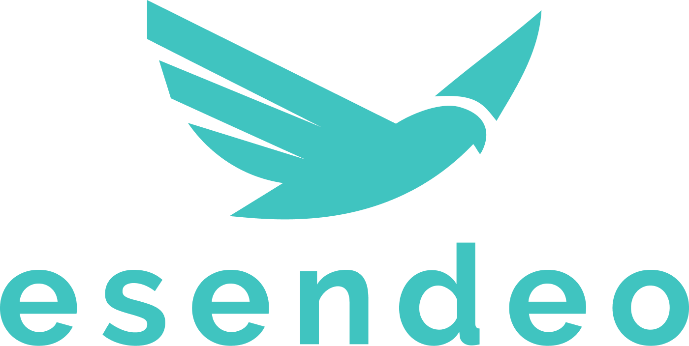

Make a complex platform recognisable and easier to explain.
Product designBrand systemWebsiteLifecycle communication
Overview
One platform, several moments of understanding.
Esendeo helps e-commerce businesses compare carriers, prepare shipments, manage deliveries and track performance. My work connected its website, visual identity, email communication and sales materials so that each touchpoint explained the same service in its own context.
Role
Product Designer
Period
2022–2023
Scope
Positioning, identity, digital and communication design
Artifacts
Website, email formats, presentation system and print
01 / Challenge
The offer had to make sense before the interface could earn trust.
Esendeo brings several carrier and shipping activities into one service. A visitor could arrive as a shop, an e-commerce team, a wholesaler or a logistics operator; each needed a different reason to explore the same platform. The project also called for a visual language that could travel from digital pages to recurring commercial material.
Design question
How could someone recognise their own logistics job, understand what Esendeo does, and meet the same clear identity later in an email or sales conversation?
↗
Evidence in the archiveFour audience routes are visible on the homepage; the website, email, slide and print files show the cross-channel scope.
The available archive contains finished designs, not an original before screen or a measured baseline. This case examines decisions visible in those artifacts.
02 / Design decisions
Three decisions hold the experience together.
01 ↗
Start with a business situation.
Show who the service is for before asking visitors to learn a feature catalogue. The homepage points to shops, e-commerce, wholesalers and logistics teams, while solution pages speak to specific operating needs.
Keep a stable typographic hierarchy and deep teal for reading; use bright colors as flexible accents across formats. The choice preserves personality without making every page start from a new visual rule.
A welcome email helps a customer get started. A feature email shows what to try next. Sales material supports a conversation. They share a voice, but not an identical composition.
The homepage introduces the service, branches into four business contexts, then explains an operational sequence: compare a carrier, ship, manage and track. A solution page can open with a more precise use case and still return to the same product capabilities.
01RecogniseChoose a business context
02UnderstandSee the platform at work
03EvaluateReview details and proof
04ActRequest a conversation
Original interface artifacts
Switch pages, then scroll inside the browser.
Each view is an original design file. Open the full image to inspect details.
Homepage · Four customer routes precede the product sequence and contact prompt.
↳
What this design makes visibleThe same multi-carrier platform has different starting points. Customers enter through their situation, then learn the shared capabilities.
04 / Visual system
The identity changes expression, not its rules.
The design files use Satoshi, a deep teal anchor and a broad palette with lighter steps. Rather than using every color on every screen, the system has a quiet reading layer and expressive moments for differentiation.
01 / TypographyClear enough for operations. Distinct enough for the brand.Satoshi in the Esendeo work · Geist + Instrument Serif in this portfolio
02 / Signature

The wordmark stays recognisable across backgrounds and formats.
These are documented design tokens and visual assets. Their effects on comprehension or conversion were not measured in the available material.
05 / Communication
A shared voice, with a different task in each channel.
Website content explains the offer. Lifecycle emails orient customers. Sales slides make the offer usable in conversation. A coherent brand needed all three to stay recognisable while doing distinct jobs.
✳
Lifecycle / five examples
Choose the message to see its purpose and original design.
Design jobIntroduce a partner and connect the offer to a concrete shipping benefit.
Sales / print
A presentation system the team could reuse.
The source deck shows repeated title, value, offer and contact structures across slides. Print materials carry the same logo, palette and hierarchy into a different format.
A connected set of assets, with impact still to measure.
The archive shows a website family, visual foundations, five email designs and reusable sales/print material. Together they demonstrate how one product story was carried into several customer-facing contexts.
04Website views in the archive
05Lifecycle email examples
03Channel families: website, email and sales
↗
What I would validate next
Test whether visitors find the right sector page without help, whether they can explain the compare → ship → manage → track model, and whether email recipients understand their next action. Track solution-page journeys and qualified enquiries after measurement is set up.
The available files do not establish production adoption, conversion change or email performance. The counts above describe design artifacts, not business results.